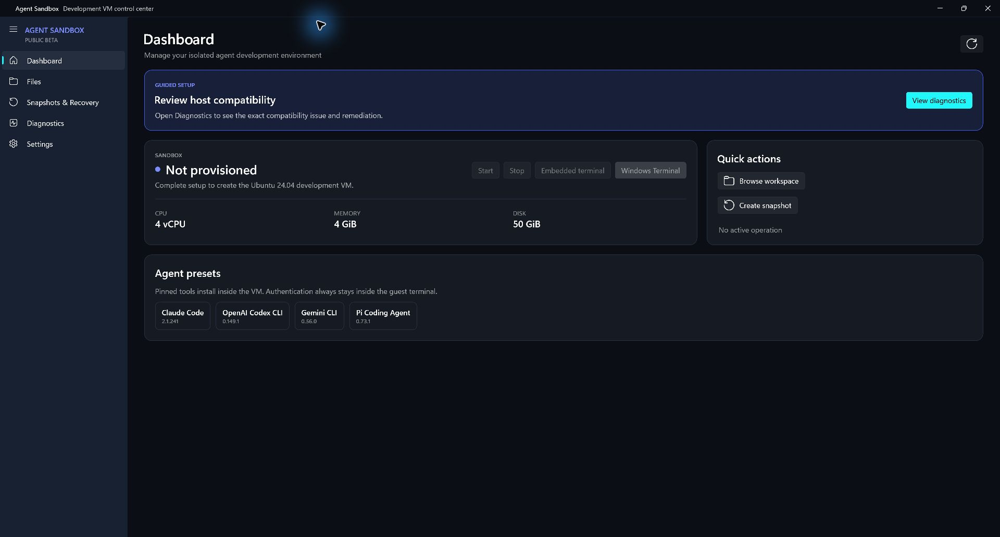

Guided VM provisioning
Choose a named Linux image, resource envelope, hardening profile, and agent presets. Resumable setup handles host checks and safe recovery after reboot.
UBUNTUDEBIANARCHFEDORAALPINE
Windows host / Linux guest
Create, harden, and manage dedicated Linux development VMs from a GUI built for repeatable agent workflows—not improvised shell scripts.
01 / Capabilities
Agent Sandbox turns the lifecycle of an isolated development machine into a visible, deliberate workflow.
Choose a named Linux image, resource envelope, hardening profile, and agent presets. Resumable setup handles host checks and safe recovery after reboot.
Development, Balanced, Restricted, Offline, or custom policy—covering updates, firewall, audit rules, kernel safeguards, privilege, and egress.
Move files through a dual-pane host/guest workspace with staging, verification, safe conflict handling, recoverable trash, and bounded archives.
Open an embedded ConPTY shell or Windows Terminal directly into the selected guest. Install pinned presets for Codex CLI, Claude Code, Gemini CLI, and Pi—then authenticate inside the VM.
02 / Control surface
A focused Windows interface keeps resources, health, snapshots, files, diagnostics, and recovery actions in view.

Lifecycle actions and system health stay close without turning the UI into a terminal wrapper.
Create and restore exact-target snapshots with typed confirmations and visible operation history.
03 / Workflow
Each meaningful transition is persisted, inspected, and recoverable.
Check edition, virtualization, Hyper-V, capacity, and the provenance of Multipass before making changes.
Select an image, resources, per-VM hardening policy, and optional agent presets.
Render temporary cloud-init, launch, enforce policy, and verify the guest-side hardening artifact.
Stop the guest, capture the known-good baseline, then restart before online presets are installed.
Use the terminal and controlled file workspace while the Windows host remains outside the agent runtime.
04 / Security posture
Agent-generated code runs in a Hyper-V VM. Files moved back to Windows remain untrusted, and Agent Sandbox does not claim to be a malware-analysis boundary.
Open engineering
Explore the production layers, lifecycle, trust boundaries, typed contracts, and release gates behind Agent Sandbox.